Solution:
Primal problem is
where LG is the Laplacian matrix. The dual problem is then
where diag(y) denotes the diagonal matrix with diagonal entries y.
The primal is strictly feasible: take X = I, the identity matrix.
The dual is strictly feasible: let λ be the largest eigenvalue of LG and take each yj > 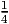λ. Then S is positive definite.
Solution:
Each diagonal entry of LG is equal to n - 1, and each off-diagonal entry is equal to -1.
We get a primal feasible solution by taking
This is positive semidefinite since it is diagonally dominant. Objective function value is
as required, where the first term in the sum corresponds to the n diagonal entries and the second term corresponds to the n(n - 1) off-diagonal entries.
We need to find a dual feasible solution that also achieves this same value in order to conclude we have the optimal value. We take
so the objective function value is 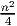 as required. The dual slack matrix is then

a psd matrix with rank equal to one. Thus, our proposed dual solution is feasible. The primal and dual values both equal 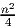, so this is the optimal value.
If n is even: Put exactly half the vertices on each side of the cut. The number of cut edges is 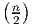2, which is also equal to the value of the SDP relaxation.
If n is odd: place ⌊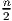⌋ = 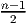 vertices on one side and ⌈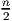⌉ = 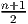 on the other side. The value of the optimal cut is therefore
so the SDP value overestimates the true value.
When n = 3, the ratio of values is
The ratio is larger for larger values of n.
Let X be an n × n permutation matrix, so it has exactly one “1” in each row and each column, with the rest of the entries being zero. Given a Hamiltonian tour on Kn, show that a permutation matrix X can be selected so that the value of the tour is equal to the trace of the n × n matrix 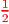WXCXT . Conversely, show that if X is a permutation matrix then the trace of WXCXT gives the value of a tour. (This result is the basis for an SDP relaxation of the traveling salesman problem.)
Solution:
Each city is mapped to a position in the tour: city 1 is in position i, city 2 is in position j, etc. We define a permutation matrix to represent this map, so
for 1 ≤ i,j ≤ n. Then
Note that
Thus
is equal to the value of the tour.
Conversely, given a permutation matrix, we can define a tour:
If Xik = 1 then city i is placed in position k in the tour.
From the equalities above, the value of this tour is given by the trace of 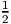WXCXT .
One feasible integral solution is x = (0, 1, 1, 0, 0), which has value 5. The linear programming relaxation of this problem is obtained by ignoring the condition that the variables x should be integral. The optimal tableau for the LP relaxation is
with 2 ≥ 0, 3 ≥ 0. Show that any feasible solution to the LP relaxation with x1 ≥ 1 has value at least 5.5. What can you say about the value of x1 in any optimal solution to the integer program?
Solution:
The objective function value of any solution is at least 3.5 + 2x1 since 2 ≥ 0 and 3 ≥ 0. With x1 ≥ 1, we get a value of at least 5.5.
Since this is worse than our known feasible integral solution, we can fix x1 = 0 using the reduced costs.
How are extreme points of CG related to node packings in G? Can you formulate the node packing problem using CG? (Hint: Note that if X ∈ CG then
the sum of the squares of the 2-norms of the vectors yk.)
Solution
Any solution with more than one nonzero vector yk is not extreme. In particular, assume we have m nonzero vectors yk. Let
Note that
so Xk ∈ C G. Further,
From the string of equalities given in the question, this is a convex combination of the matrices XK, so X is not an extreme point of C G.
Thus, the only extreme points are matrices of the form
Note that Xij = yiyj, so if (i,j) ∈ E then either yi = 0 or yj = 0. Thus, the support of y is a node packing.
We use the objective function of maximizing the sum of all entries in X. Let M denote the matrix of ones. So our formulation is
|
| (1) |
Since the objective function is linear and the feasible region is compact, there is an optimal solution that is an extreme point of CG. When X is an extreme point, so X = yyT for some y ∈ ℝ+n, we have
the square of the 1-norm of y. Maximizing the 1-norm subject to the 2-norm being (no larger than) 1 has the optimal solution where every nonzero component of y is equal to 1∕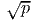, where p is the number of nonzero components. Thus, for a given support, the optimal y is to take every nonzero component to be the same, and then the objective function value is equal to the number of nonzero components.
Thus, the node packing problem is equivalent to the completely positive program (1).